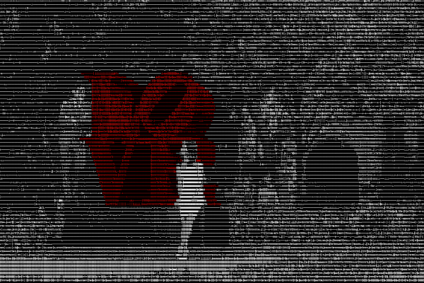

Unique Unicode
VIEW PROJECT Inspired by my Korean identity and background in multi-media design, I created an ASCII-style rendition of my original photography using Hangul Jamo Unicode code points.
Key Words: Identity, Garden, Medium, Metaphor, Monster, Network